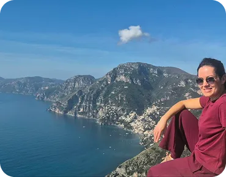
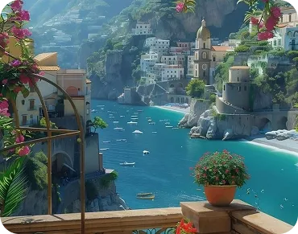
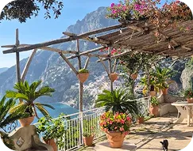
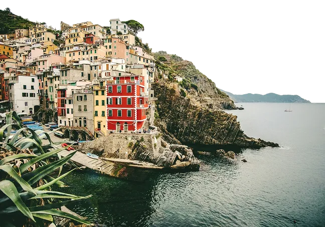

-
- Тривалість
- до 8 годин
-
- Вартість
- від 550 €
-
- Формат
Про подорож
Є місця, які неможливо “просто відвідати”.
Їх потрібно прожити.
Ця прогулянка — саме про такий Amalfi Coast. Не глянцевий і туристичний, а глибший, старовинний, майже кінематографічний.
Про стежки серед лимонних садів, старі фортеці над морем, запах дикого розмарину в повітрі, келих домашнього вина після довгого підйому і той момент, коли стоїш високо над узбережжям і розумієш, наскільки неймовірним може бути цей світ.
Ми розпочнемо день у Майорі — одному з найавтентичніших і найприємніших містечок Амальфітанського узбережжя.
На відміну від більш гучних і туристичних міст, Майорі має зовсім інший ритм: широка набережна, місцеве життя, ранкова кава біля моря і атмосфера справжньої південної Італії без поспіху.
Перед початком маршруту ми прогуляємося історичним центром і побачимо Collegiata di Santa Maria a Mare — головну церкву міста, яка височіє над Майорі.
Саме тут зберігається старовинна дерев’яна статуя Діви Марії з немовлям, яку, за легендою, знайшли в морі після того, як моряки були змушені викинути її за борт під час шторму, щоб врятувати корабель.
Усередині також можна побачити монументальний поліфонічний орган і крипту з мощами Святого Климента.
Далі пройдемо повз Palazzo Mezzacapo — одну з найелегантніших історичних будівель Майорі з фресками в стилі бароко.
Особливу красу цьому місцю надають його сади, створені у формі мальтійського хреста — тихий і дуже атмосферний куточок серед пальм, квітів та старовинної архітектури.
І вже звідси почнеться наша дорога вгору — до Castello San Nicola de Thoro-Plano, середньовічної фортеці IX століття, яка століттями охороняла узбережжя від нападів сарацинів. Це не просто замок.


Удень вони спостерігали за морем у тиші, а вночі перетворювалися на систему вогнів, попереджаючи про наближення сарацинських кораблів. Достатньо було одного багаття — і сигнал проходив уздовж усього узбережжя. Сьогодні ці вежі виглядають майже романтично. Але за цією красою — століття історії, страху, сили та боротьби. Коли ми дістанемося Castello San Nicola de Thoro-Plano, перед нами відкриється один із найкрасивіших краєвидів узбережжя. Звідси видно Майорі, море, Равелло, Трамонті та зелені гори Латтарі, які ніби обіймають узбережжя.
І саме тут починається найособливіша частина цього дня. Нас зустріне власник замку — Crescenzo De Martino, чия родина вже близько 200 років доглядає цю фортецю.

Удень вони спостерігали за морем у тиші, а вночі перетворювалися на систему вогнів, попереджаючи про наближення сарацинських кораблів. Достатньо було одного багаття — і сигнал проходив уздовж усього узбережжя. Сьогодні ці вежі виглядають майже романтично. Але за цією красою — століття історії, страху, сили та боротьби. Коли ми дістанемося Castello San Nicola de Thoro-Plano, перед нами відкриється один із найкрасивіших краєвидів узбережжя. Звідси видно Майорі, море, Равелло, Трамонті та зелені гори Латтарі, які ніби обіймають узбережжя.
І саме тут починається найособливіша частина цього дня. Нас зустріне власник замку — Crescenzo De Martino, чия родина вже близько 200 років доглядає цю фортецю.
Що вас чекає
У вартість входить
-
супровід і організація
-
екскурсія замком із власником
-
допомога з логістикою
Що взяти з собою
Рекомендація
Цю прогулянку особливо рекомендую тим, хто хоче побачити Amalfi Coast глибше: не лише красиві листівки, а місця з історією, характером і душею.
Dolce Vita Maiori — Castello San Nicola — це день, після якого Amalfi Coast залишиться з вами вже зовсім по-іншому
